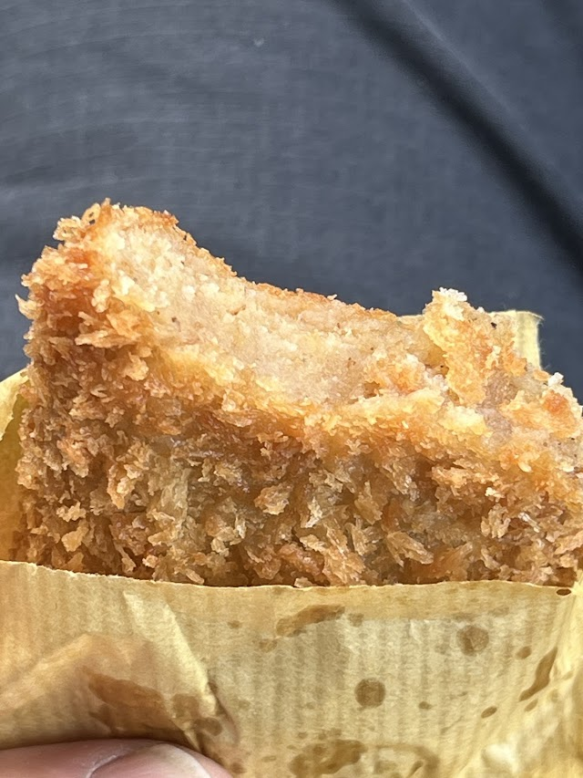
| 営業時間 | 月・火・水・木・金・土 9:00〜13:00, 15:00〜19:00 |
|---|---|
| 定休日 | 日曜 |
| 住所 | 富山県高岡市あわら町１３−３１ |
| 予約 | 要確認 — ☎ 0766-23-1070 |
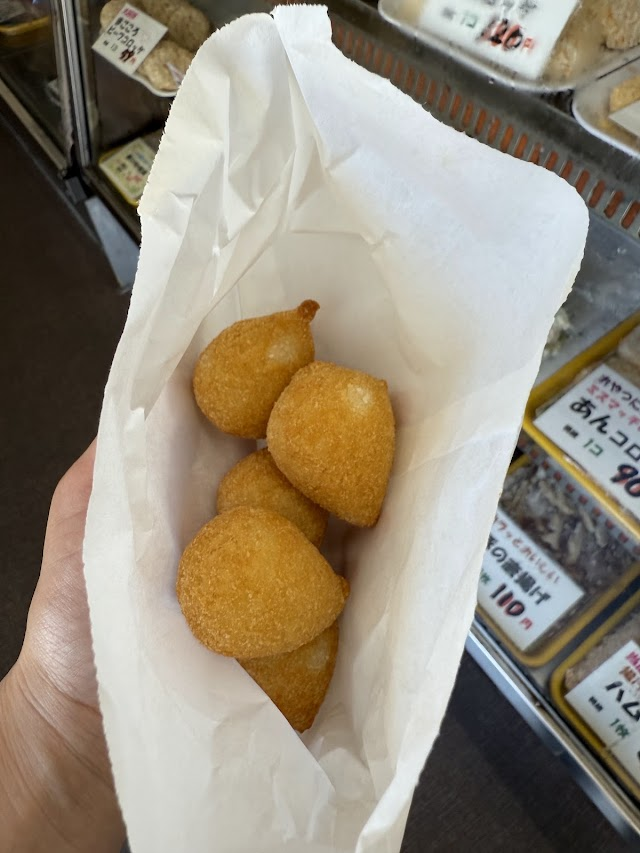
| 営業時間 | 月・火・水・木・金 9:00〜18:30 ／ 土 8:00〜18:00 |
|---|---|
| 定休日 | 日曜 |
| 住所 | 富山県高岡市大坪町３丁目５−１２ |
| 予約 | 要確認 — ☎ 0766-21-6031 ／ 公式サイト |
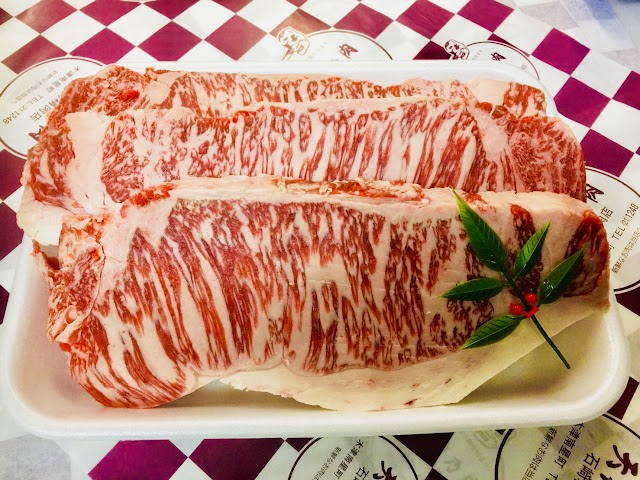
| 営業時間 | 月・火・水・木・金・土・日 17:00〜19:00 |
|---|---|
| 定休日 | なし(要最終確認) |
| 住所 | 富山県高岡市木津 南星町1423 |
| 予約 | 要確認 — ☎ 0766-21-1248 |
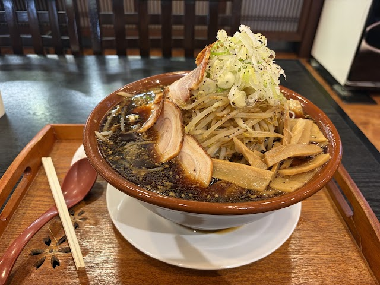
| 営業時間 | 月・火・木・金・土・日 9:00〜19:00 ／ 水 0:00〜19:00 |
|---|---|
| 定休日 | なし(要最終確認) |
| 住所 | 富山県高岡市蜂ケ島１３１−１ |
| 予約 | 要確認 — ☎ 0766-30-0011 ／ 公式サイト |
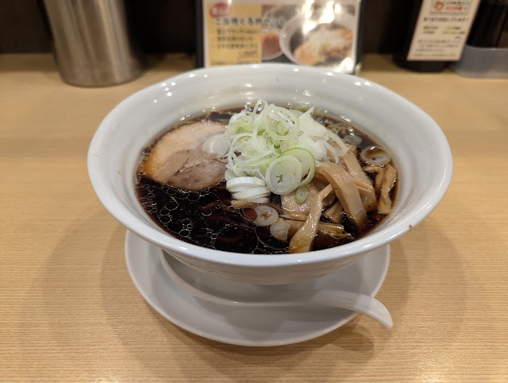
| 営業時間 | 火・水・木・金・土 11:00〜21:00 ／ 日 11:00〜17:30 |
|---|---|
| 定休日 | 月曜 |
| 住所 | 富山県高岡市末広町１−８ |
| 予約 | 要確認 — ☎ 0766-25-2598 ／ 公式サイト |
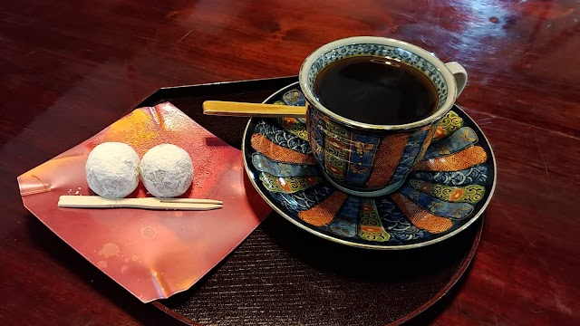
| 営業時間 | 月・火・木・金・土・日 11:00〜17:00 |
|---|---|
| 定休日 | 水曜 |
| 住所 | 富山県高岡市木舟町３８ |
| 予約 | 可 — ☎ 0766-25-1117 ／ 公式サイト |
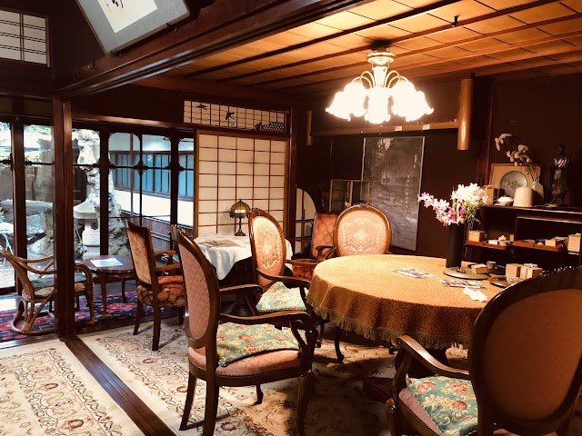
| 営業時間 | 月・水・木・金・土・日 10:00〜17:00 |
|---|---|
| 定休日 | 火曜 |
| 住所 | 富山県高岡市金屋町６−９ |
| 予約 | 要確認 — ☎ 0766-25-1911 ／ 公式サイト |
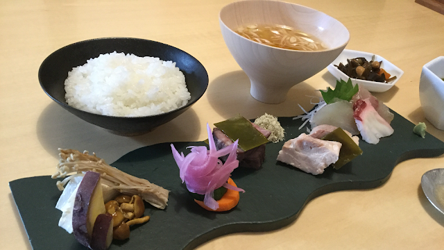
| 営業時間 | 月・火・水・木・金・土・日 11:30〜14:00 |
|---|---|
| 定休日 | なし(要最終確認) |
| 住所 | 富山県高岡市小馬出町６ 山町ヴァレー 二の蔵 |
| 予約 | 可 — ☎ 0766-75-9013 ／ 公式サイト |
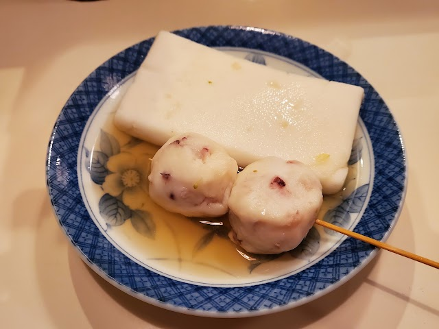
| 営業時間 | 月・火・水・木・金・土・日 17:00〜22:00 |
|---|---|
| 定休日 | なし(要最終確認) |
| 住所 | 富山県高岡市片原町１１４４ |
| 予約 | 可 — ☎ 080-4258-5634 ／ 公式サイト |
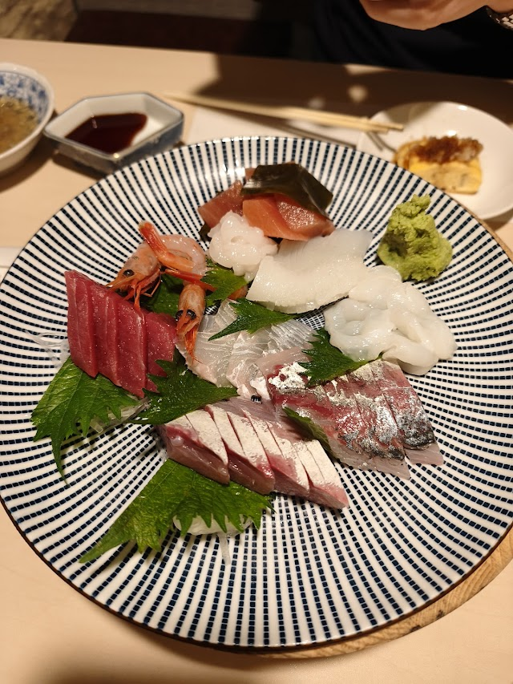
| 営業時間 | 月・火・水・木・金・土 17:30〜23:00 |
|---|---|
| 定休日 | 日曜 |
| 住所 | 富山県高岡市御旅屋町９−１８ |
| 予約 | 可 — ☎ 0766-25-0480 ／ 公式サイト |
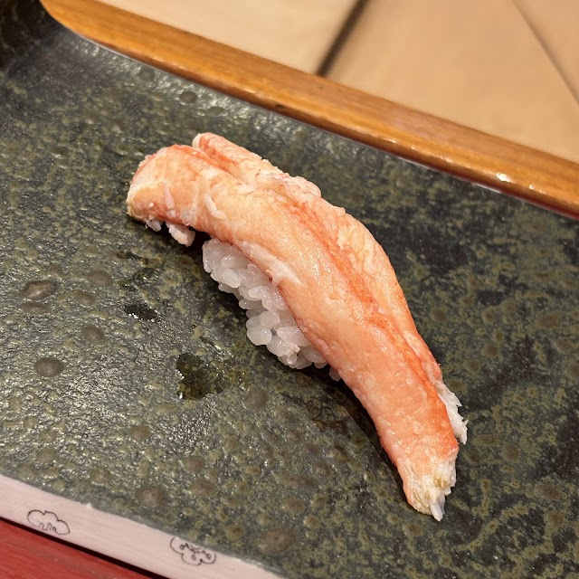
| 営業時間 | 月・火・水・木・金・土 12:00〜13:30, 18:00〜21:00 |
|---|---|
| 定休日 | 日曜 |
| 住所 | 富山県高岡市末広町５０−１３ |
| 予約 | 可 — ☎ 0766-23-5781 |
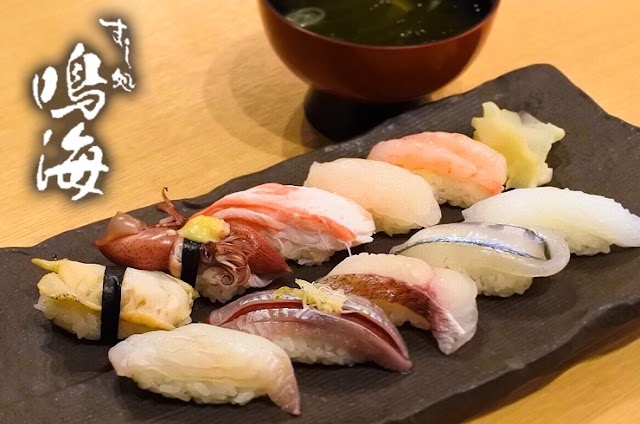
| 営業時間 | 月・火・木・金・土・日 12:00〜14:00, 17:00〜21:00 |
|---|---|
| 定休日 | 水曜 |
| 住所 | 富山県高岡市京田５４５−１ |
| 予約 | 可 — ☎ 0766-73-2930 ／ 公式サイト |
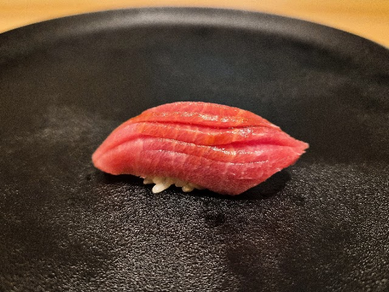
| 営業時間 | 月・火・水・木・金・土・日 18:00〜22:00 |
|---|---|
| 定休日 | なし(要最終確認) |
| 住所 | 富山県高岡市定塚町１２８４ |
| 予約 | 可 — ☎ 0766-73-8565 ／ 公式サイト |
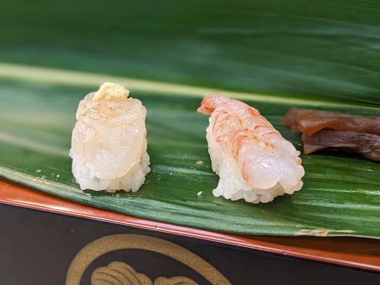
| 営業時間 | 月・火・木・金 12:00〜13:45, 17:30〜20:45 ／ 土 12:00〜13:45, 17:30〜21:45 ／ 日 12:00〜13:45, 17:30〜19:30 |
|---|---|
| 定休日 | 水曜 |
| 住所 | 富山県高岡市宮脇町１００４ |
| 予約 | 可 — ☎ 0766-22-1781 |
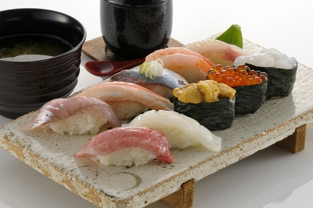
| 営業時間 | 月・火・水・木・金・土・日 11:00〜21:00 |
|---|---|
| 定休日 | なし(要最終確認) |
| 住所 | 富山県高岡市あわら町６−１１０ |
| 予約 | 可 — ☎ 050-5487-9521 ／ 公式サイト |
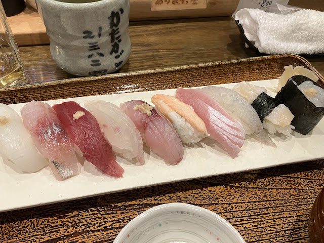
| 営業時間 | 月・火・木・金・土・日 11:30〜14:00, 17:00〜22:00 |
|---|---|
| 定休日 | 水曜 |
| 住所 | 富山県高岡市野村725ｰ3 |
| 予約 | 可 — ☎ 0766-21-3824 ／ 公式サイト |
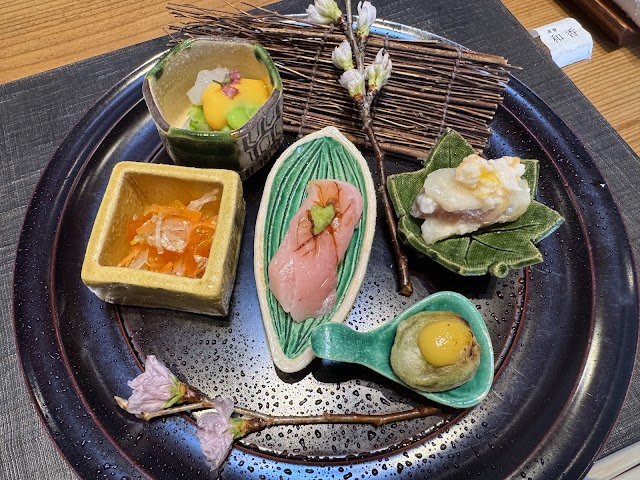
| 営業時間 | 月・火・水・木・金・土 11:30〜14:00, 18:00〜22:00 |
|---|---|
| 定休日 | 日曜 |
| 住所 | 富山県高岡市金屋本町２−２６ |
| 予約 | 可 — ☎ 0766-75-8529 ／ 公式サイト |
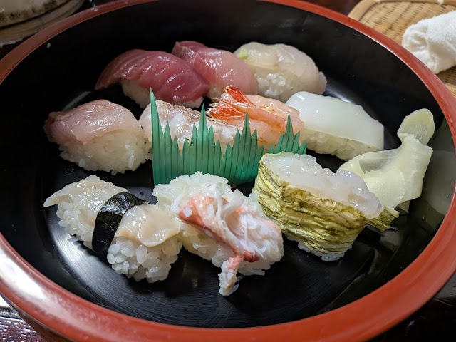
| 営業時間 | 月・火・水・木・金・土・日 11:30〜14:00, 16:30〜22:00 |
|---|---|
| 定休日 | なし(要最終確認) |
| 住所 | 富山県高岡市野村１２５５ |
| 予約 | 可 — ☎ 0766-28-1076 ／ 公式サイト |
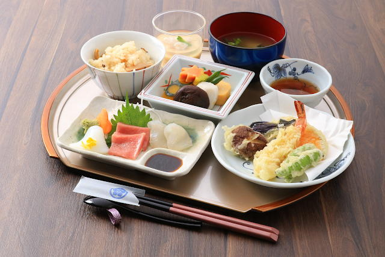
| 営業時間 | 月・木・金・土・日 11:30〜14:00 |
|---|---|
| 定休日 | 火・水曜 |
| 住所 | 富山県高岡市金屋町５−４ |
| 予約 | 可 — ☎ 0766-75-0780 |
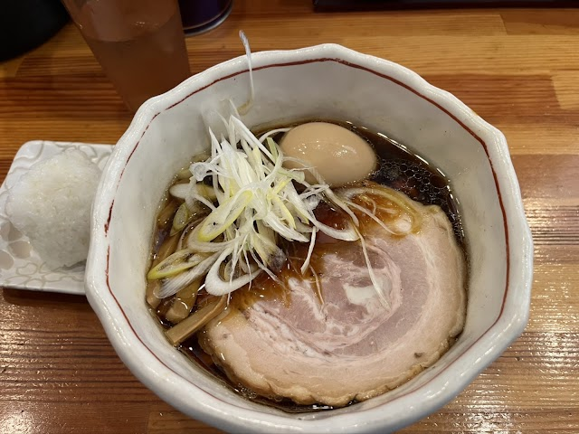
| 営業時間 | 火・水・木・金 11:00〜13:45, 17:30〜21:15 ／ 土 11:00〜14:45, 17:30〜21:15 ／ 日 11:00〜14:45, 17:30〜20:15 |
|---|---|
| 定休日 | 月曜 |
| 住所 | 富山県高岡市宝町１１−５ |
| 予約 | 要確認 — ☎ 0766-28-4009 ／ 公式サイト |
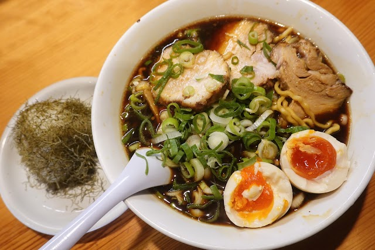
| 営業時間 | 月・火・水・木・金・土・日 11:00〜0:00 |
|---|---|
| 定休日 | なし(要最終確認) |
| 住所 | 富山県高岡市野村７２２−１ |
| 予約 | 要確認 — ☎ 0766-24-4262 ／ 公式サイト |
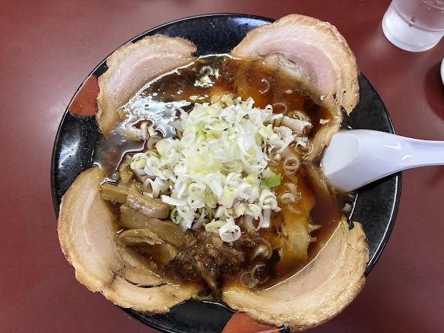
| 営業時間 | 月・火・水・金・土・日 11:30〜15:00, 17:00〜21:30 |
|---|---|
| 定休日 | 木曜 |
| 住所 | 富山県高岡市鐘紡町５−４０ |
| 予約 | 要確認 — ☎ 0766-21-8077 ／ 公式サイト |
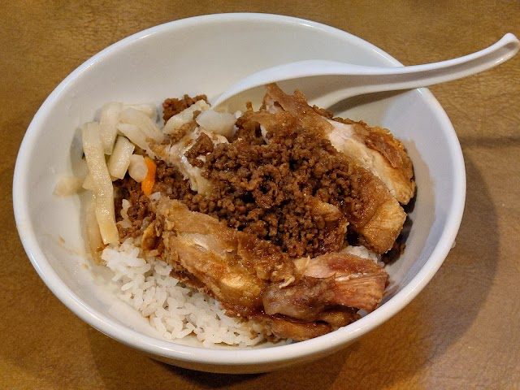
| 営業時間 | 月・木・金・土・日 11:30〜13:30, 17:00〜20:30 |
|---|---|
| 定休日 | 火・水曜 |
| 住所 | 富山県高岡市川原本町５−１８ |
| 予約 | 要確認 — ☎ 0766-22-9224 |
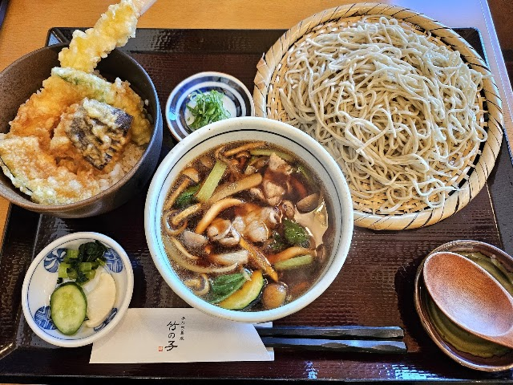
| 営業時間 | 火・水・木・金・土 11:00〜14:30 |
|---|---|
| 定休日 | 月・日曜 |
| 住所 | 富山県高岡市中川１丁目１−１４ |
| 予約 | 可 — ☎ 0766-75-1248 ／ 公式サイト |
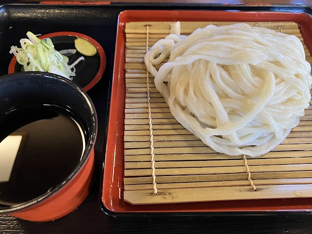
| 営業時間 | 月・火・木・金・土・日 11:00〜20:00 ／ 水 11:00〜15:00 |
|---|---|
| 定休日 | なし(要最終確認) |
| 住所 | 富山県高岡市丸の内１−７ |
| 予約 | 要確認 — ☎ 0766-22-0308 ／ 公式サイト |
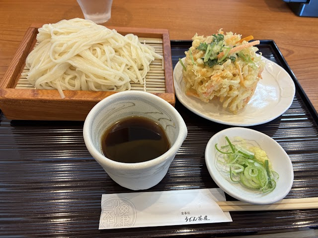
| 営業時間 | 月・火・水・金・土・日 11:00〜15:00 |
|---|---|
| 定休日 | 木曜 |
| 住所 | 富山県氷見市上泉２０ |
| 予約 | 要確認 — ☎ 0766-92-7878 ／ 公式サイト |
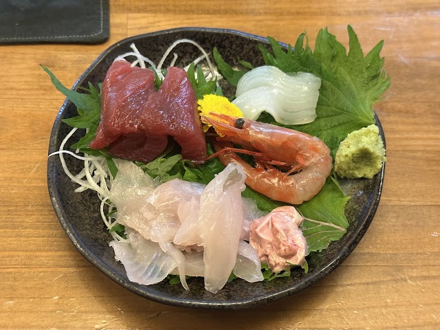
| 営業時間 | 水・木・金・土・日 17:00〜22:00 |
|---|---|
| 定休日 | 月・火曜 |
| 住所 | 富山県高岡市御旅屋町１２１６ Vamosビル 1F |
| 予約 | 可 — ☎ 0766-75-1118 ／ 公式サイト |
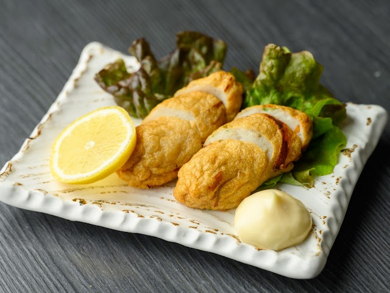
| 営業時間 | 月・火・水・木・金・土 15:00〜23:00 ／ 日 15:00〜22:00 |
|---|---|
| 定休日 | なし(要最終確認) |
| 住所 | 富山県高岡市末広町４２ |
| 予約 | 可 — ☎ 0766-24-5745 ／ 公式サイト |
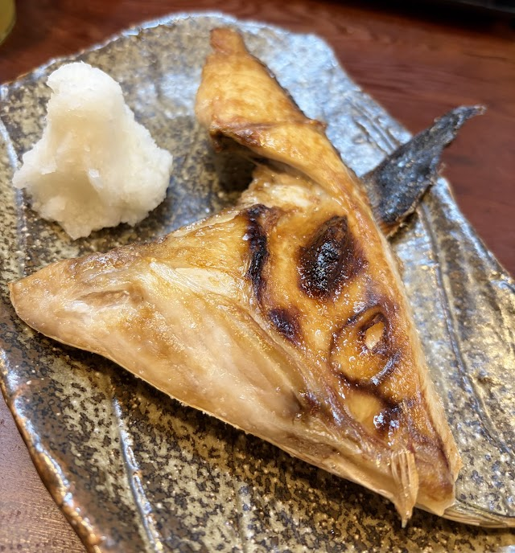
| 営業時間 | 月・火・木・金・土・日 17:00〜22:00 |
|---|---|
| 定休日 | 水曜 |
| 住所 | 富山県高岡市末広町４２−１２ |
| 予約 | 可 — ☎ 080-6368-9774 |
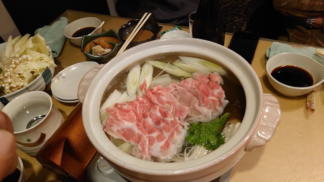
| 営業時間 | 月・火・水・木・金・土 18:00〜0:00 |
|---|---|
| 定休日 | 日曜 |
| 住所 | 富山県高岡市御旅屋町９−３０ |
| 予約 | 可 — ☎ 0766-25-5501 |
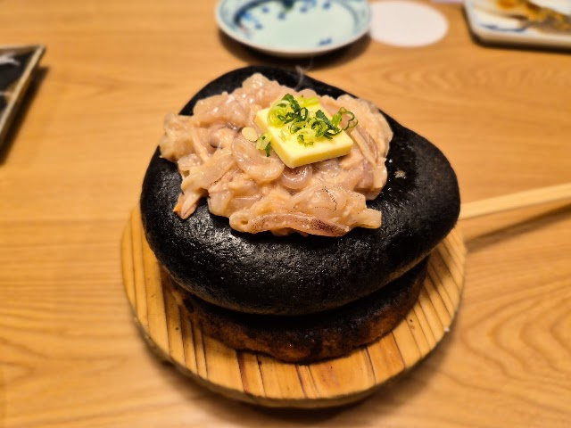
| 営業時間 | 火・水・木・金・土 17:30〜22:30 |
|---|---|
| 定休日 | 月・日曜 |
| 住所 | 富山県高岡市御旅屋町４２ |
| 予約 | 可 — ☎ 0766-25-0033 ／ 公式サイト |
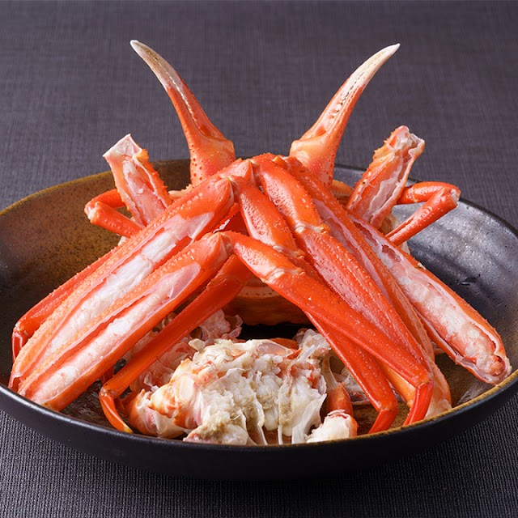
| 営業時間 | 月・火・水・木 17:00〜21:30 ／ 金・土 17:00〜22:00 |
|---|---|
| 定休日 | 日曜 |
| 住所 | 富山県高岡市末広町８−４３ |
| 予約 | 可 — ☎ 0766-25-3093 ／ 公式サイト |
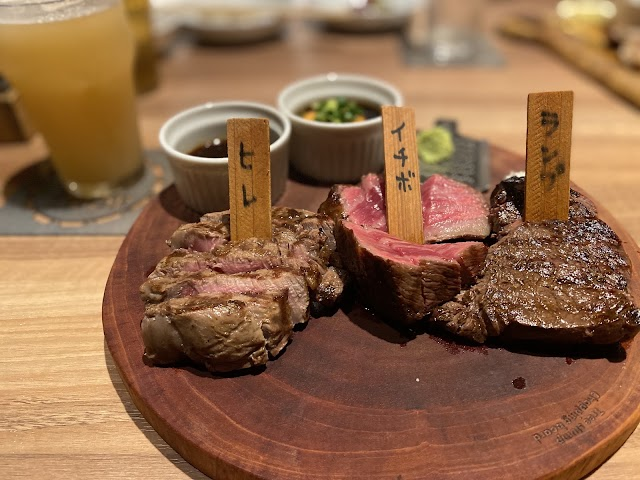
| 営業時間 | 月・火・水・木 17:00〜1:00 ／ 金・土 17:00〜2:00 |
|---|---|
| 定休日 | 日曜 |
| 住所 | 富山県高岡市宮脇町１００４ 1F |
| 予約 | 可 — ☎ 0766-26-8886 ／ 公式サイト |
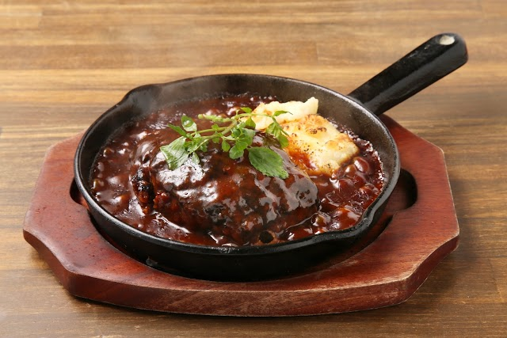
| 営業時間 | 月・火・木・金・土 11:30〜13:30, 18:00〜21:30 ／ 水 18:00〜21:30 ／ 日 11:30〜13:30, 17:00〜20:30 |
|---|---|
| 定休日 | なし(要最終確認) |
| 住所 | 富山県高岡市末広町３８ 大重亭ビル 2F |
| 予約 | 可 — ☎ 0766-22-1669 ／ 公式サイト |
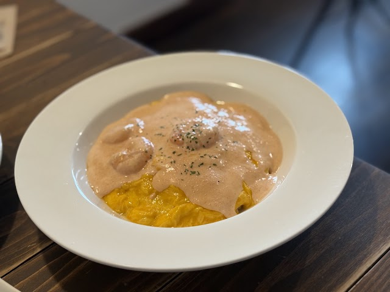
| 営業時間 | 月・火・木・金・土・日 11:00〜15:00, 18:00〜22:00 |
|---|---|
| 定休日 | 水曜 |
| 住所 | 富山県高岡市下黒田７８０−６ |
| 予約 | 可 — ☎ 0766-60-8049 ／ 公式サイト |
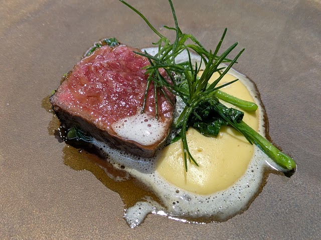
| 営業時間 | 月・火・水・木・金・土・日 12:00〜14:30, 18:00〜21:30 |
|---|---|
| 定休日 | なし(要最終確認) |
| 住所 | 富山県高岡市清水町３丁目５−５８ 2F |
| 予約 | 可 — ☎ 050-3159-4027 ／ 公式サイト |
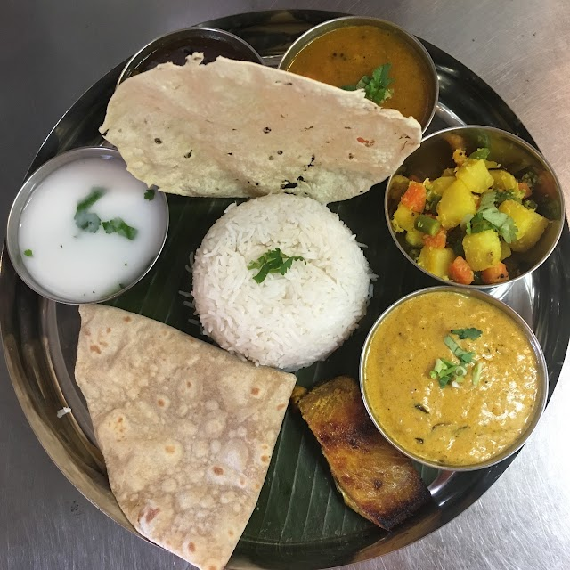
| 営業時間 | 月・水・木・金・土・日 11:00〜15:00, 17:30〜22:00 |
|---|---|
| 定休日 | 火曜 |
| 住所 | 富山県高岡市東上関７−２５９ |
| 予約 | 可 — ☎ 0766-53-5087 ／ 公式サイト |
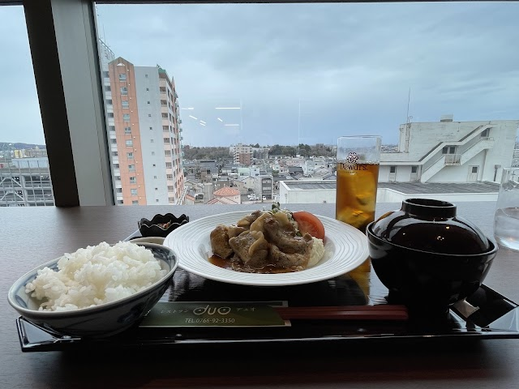
| 営業時間 | 月・火・水・木・金・土・日 11:30〜14:30, 17:00〜21:30 |
|---|---|
| 定休日 | なし(要最終確認) |
| 住所 | 富山県高岡市御旅屋町１０１ 7階 御旅屋セリオ |
| 予約 | 可 — ☎ 0766-92-3350 ／ 公式サイト |
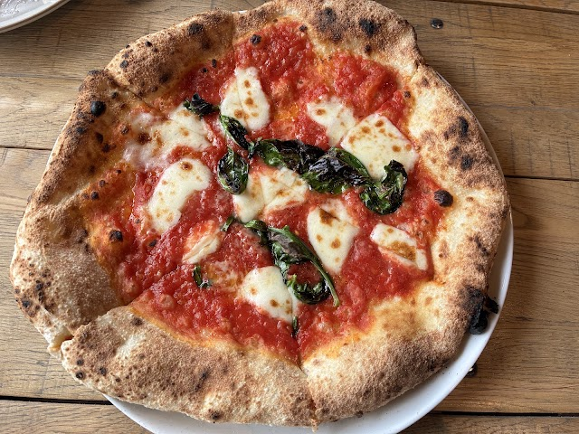
| 営業時間 | 月・火・水・木・金 11:00〜15:00, 17:00〜23:00 ／ 土・日 11:00〜23:00 |
|---|---|
| 定休日 | なし(要最終確認) |
| 住所 | 富山県高岡市坂下町８６−１ |
| 予約 | 可 — ☎ 070-8942-1802 ／ 公式サイト |
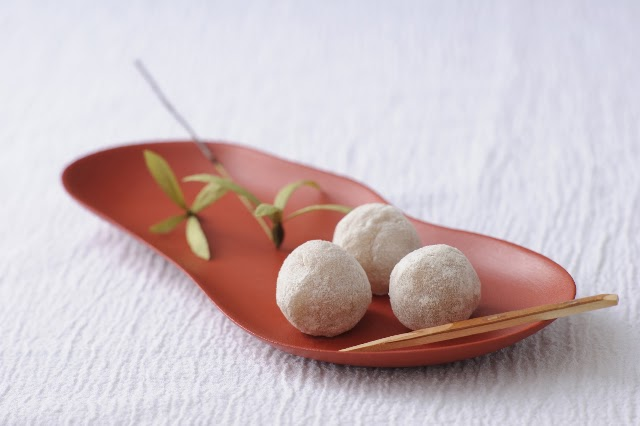
| 営業時間 | 月・火・木・金・土・日 8:30〜19:00 |
|---|---|
| 定休日 | 水曜 |
| 住所 | 富山県高岡市木舟町１２ |
| 予約 | 要確認 — ☎ 0766-25-0215 ／ 公式サイト |
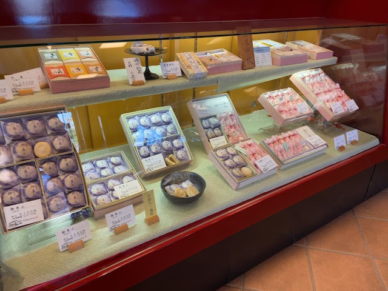
| 営業時間 | 月・水・木・金・土・日 9:00〜19:00 |
|---|---|
| 定休日 | 火曜 |
| 住所 | 富山県高岡市京田１４０−１ |
| 予約 | 要確認 — ☎ 0766-25-0028 ／ 公式サイト |
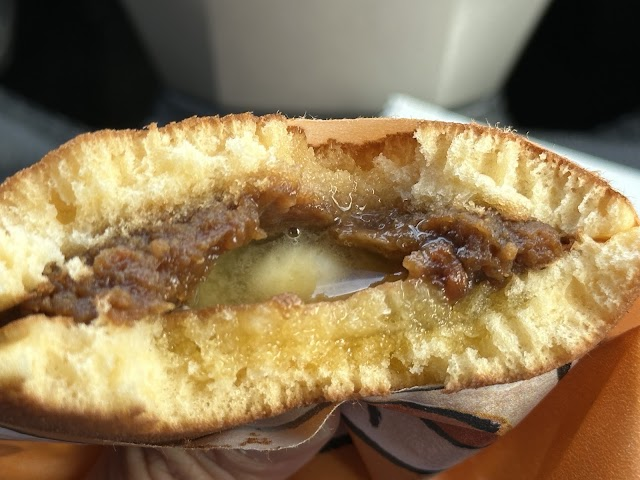
| 営業時間 | 月・火・木・金・土・日 8:00〜19:00 |
|---|---|
| 定休日 | 水曜 |
| 住所 | 富山県高岡市宮田町２−１ |
| 予約 | 要確認 — ☎ 0766-25-0514 ／ 公式サイト |
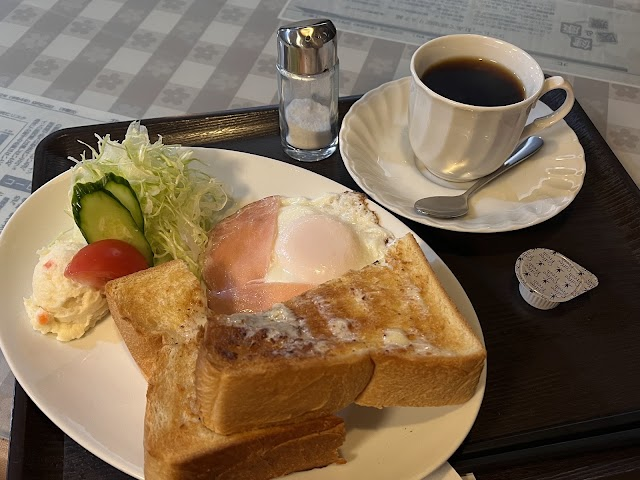
| 営業時間 | 月・火・水・木・金 9:00〜18:00 ／ 土・日 9:00〜17:00 |
|---|---|
| 定休日 | なし(要最終確認) |
| 住所 | 富山県高岡市駅南３丁目１−５ |
| 予約 | 要確認 — ☎ 0766-24-1751 ／ 公式サイト |
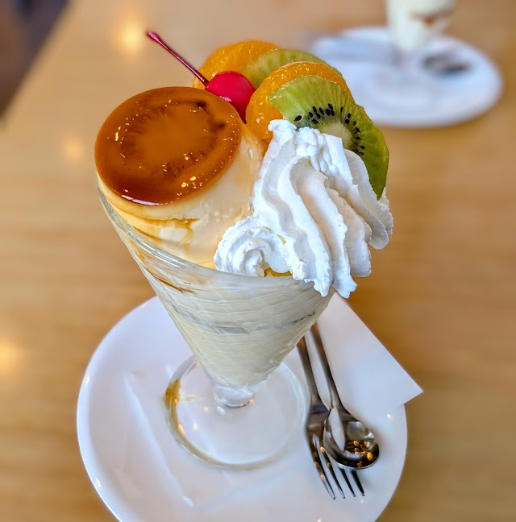
| 営業時間 | 月・火・木・金・土 9:00〜21:00 ／ 日 8:00〜21:00 |
|---|---|
| 定休日 | 水曜 |
| 住所 | 富山県高岡市木津１６３４−３ |
| 予約 | 要確認 — ☎ 0766-25-0619 ／ 公式サイト |
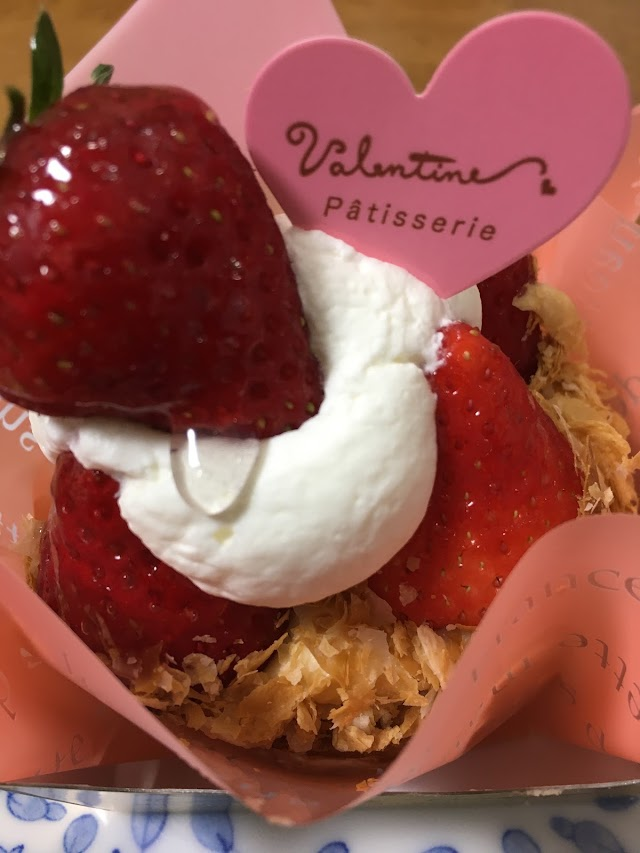
| 営業時間 | 火・水・木・金・土・日 9:30〜18:00 |
|---|---|
| 定休日 | 月曜 |
| 住所 | 富山県高岡市京田４３０ |
| 予約 | 要確認 — ☎ 0766-28-8151 ／ 公式サイト |
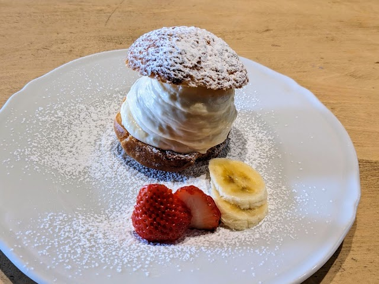
| 営業時間 | 水・木・金・土・日 11:00〜17:00 |
|---|---|
| 定休日 | 月・火曜 |
| 住所 | 富山県高岡市小馬出町４８−１ |
| 予約 | 可 — ☎ 070-5465-0993 ／ 公式サイト |
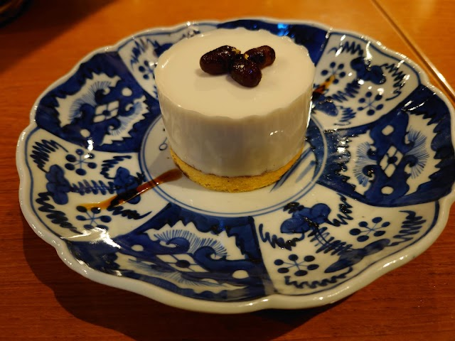
| 営業時間 | 水・木・金・土 10:30〜16:00 |
|---|---|
| 定休日 | 月・火・日曜 |
| 住所 | 富山県高岡市和田１６ |
| 予約 | 要確認 — ☎ 0766-22-1022 ／ 公式サイト |
本ガイドは個人利用目的で作成。掲載情報は2026年8月時点の調査に基づく。写真出典: Google Maps投稿写真(©各投稿者/Google)。